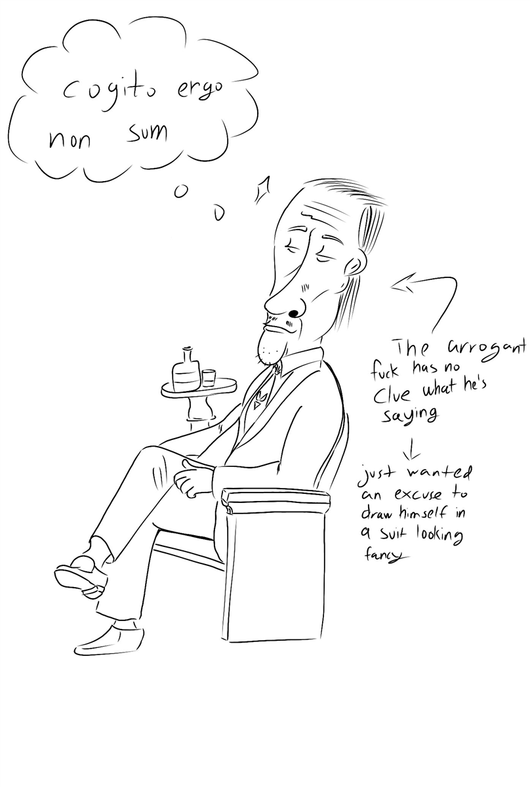

My last archive was one of my weakest works. I dare say it was not even funny. I failed to make that part of my life abstract, and to be blunt, reading it sounds like just anyone begging for a better grade. With this, I have decided to put my poker studies on halt and start studying comedy, as Conan O’Brien suggested. Holy shit, I also realize that by the time this is posted, I have been spelling his name as Conan O’ Brian, and I will be fixing that. One last thing: Tim Krieder's website is down. This week has been the worst week of my life.
- “Adios Amigo” - Chicken Connoisseur